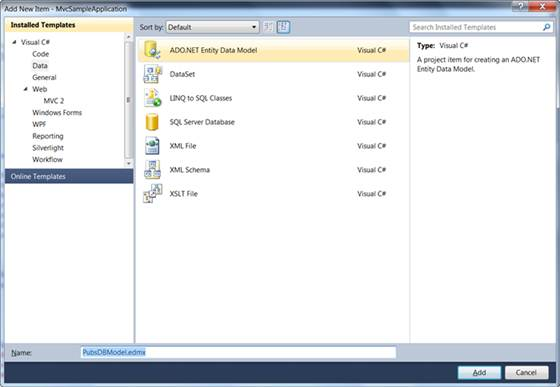
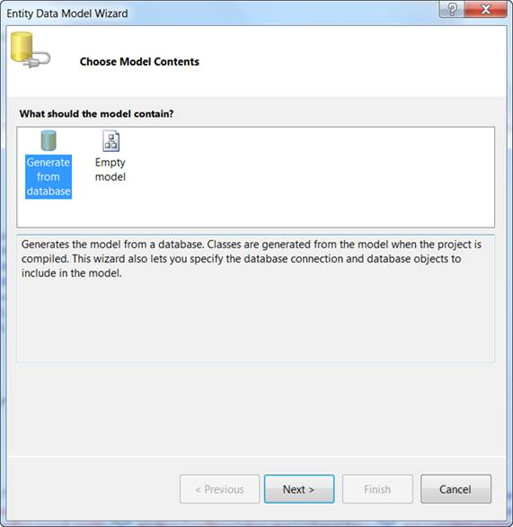
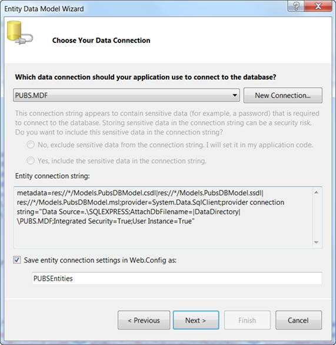
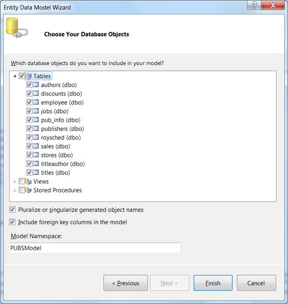
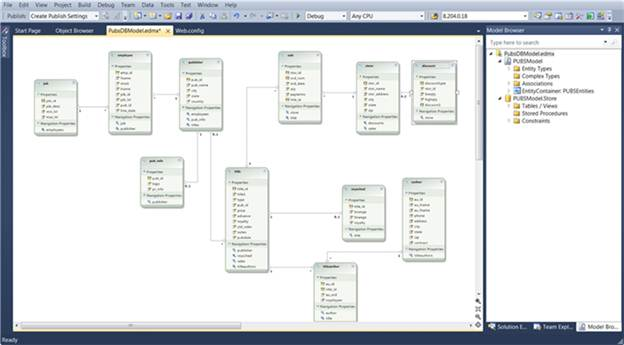

In order to use the Entity Framework, you need to create an Entity Data Model. You can take advantage of the Visual Studio Entity Data Model Wizard to generate an Entity Data Model from a database automatically.
To do so, follow these six steps:
1. Right-click the Models folder in the Solution Explorer window and select the menu option Add, New Item.
2. In the Add New Item dialog, select the Data category (see Figure 340).

Figure 340: Creating a New Entity Data Model
3. Select the ADO.NET Entity Data Model template, give the Entity Data Model the name PubsDBModel.edmx, and click the Add button. Clicking the Add button launches the Data Model Wizard.
4. In the Choose Model Contents step, choose the Generate from database option and click the Next button (see Figure 341).

Figure 341: Choosing Model Contents
5. In the Choose Your Data Connection step, select the Pubs.mdf database connection, enter the entities connection settings name PubsEntities, and click the Next button (see Figure 342).

Figure 342: Choose Your Data Connection
6. In the Choose Your Database Objects step, select all the database tables and click the Finish button (see Figure 343).

Figure 343: Choose Your Database Objects
When you are finished, you will be able to find the following image.

Figure 344: PubsDbEntity Model